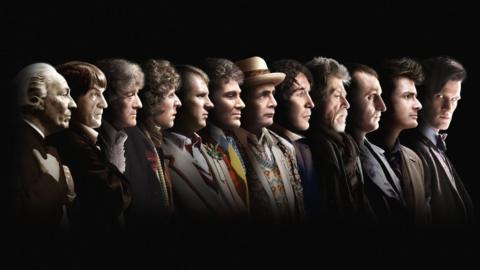

Doctor Who is a British science fiction TV show produced by BBC. The show started in 1963 and stopped airing after 1996 (classical era). The show however, was rebooted in
2005 and is still being produced today (new era). The show is about an alien named the Doctor from the Timelord race that are capable of regenerating. The Doctor travels in time and
space in his/her ship, the TARDIS, which is disguised as a blue policebox. The Doctor has multiple companions from Earth that help him/her in defeating evil species.
In this article we will analyze the most popular Doctor of all time and their top 5 episodes.
PrevNext
Episodes Titles
Here we see the word clouds of each of the doctor's episode titles, which you are able to choose the actor of the doctor in the drop down menu. From this we
can see how the classic era had more numbers in their episode titles as their episodes continued for multiple parts. In addition, Paul McGann
featured as the Doctor only in one movie which is why he doesn't have many words at all compared to others.
The chart below shows the timeline of the current 13 actors who have played the Doctor and their picture and information appears once you hover on top. You can also zoom in on this graph by dragging across. Next we will look at the timeline of the episodes themselves.
The chart below shows the ratings of each year compared to its ratings and is divided by color depending on if it was from the classical or new era of Doctor Who. The details of the date and ratings as well as episode name and actor of the Doctor in that episode is shown when you hover over the line graph.
The chart below compares each of the episode's duration in relation to their ratings, and is divided by color depending on if it was from the classical or new era of Doctor Who.
From this we see that new era episodes tend to be longer than the classical era. We should now analyze this chart by separating by each of the different doctors.
The chart below is categorizes the previous chart depending on the Doctor number. By clicking the Details scroll, there is the option to see less data which represents each of the Doctor's average episode duration.
From this we can see that the 4th Doctor Tom Baker (classic) and the 10th Doctor David Tennant (new) have the highest average ranking for their episodes. [Note, excluding the 8th doctor as Paul McGann did not have episodes, only one movie].
Therefore we will compare Tom Baker and David Tennant to see who scores higher in terms of episode number and fan rating to see which is the most popular doctor.DetailsPreviousNext
Number of Episodes: Tom Baker vs David Tennant
The chart below shows the number of episodes of Tom Baker and David Tennant. Hover over each bar to see their picture. To understand which Doctor fans like better we should compare their fan ratings.PreviousNext
Fan Popularity: Tom Baker vs David Tennant
The chart below shows the Fan Rating of Tom Baker and David Tennant from Digital Spy. Hover over each to see their picture and their popularity rating out of 10.
David Tennant scored higher than Tom Baker in fan ratings so now let's look at a timeline of David Tennant's episodes. PreviousNext
David Tennant's Episodes
This chart is a timeline of David Tennant's episodes, if you hover over you can see a picture from that episode.
We can see three clusters which are his seasons (season 2, 3, 4). The episodes in between these are his Christmas specials.
Next let's find out which of Tennant's episodes rate the highest.
PreviousNext
David Tennant's episodes rating
This chart shows all David Tennant's episodes and their rating, and his top five episodes are highlighted in yellow.
The top four episodes are all Christmas specials with special guest stars and multiple companions, thus in conclusion christmas episodes with multiple featuring companions are most popular with the 10th Doctor, David Tennant, being the most popular doctor.
Previous